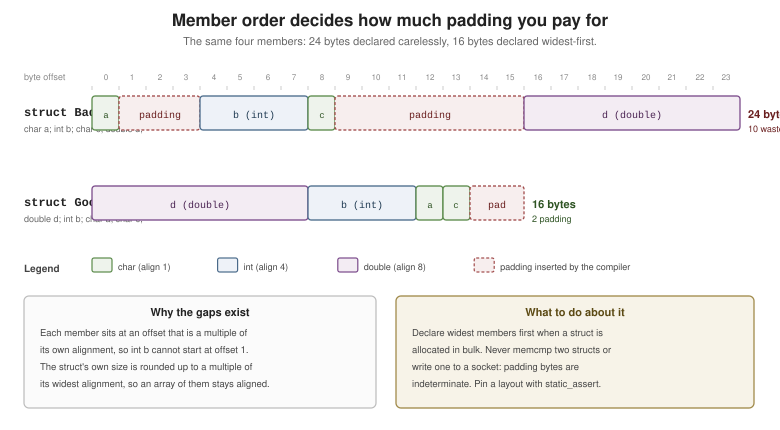

Structures, Unions and Type Aliases
|
This content was generated with the assistance of AI and should be verified against the official documentation before being relied on in production. |
struct is how C builds aggregate types: a fixed set of named members laid out in declaration order. union
overlays members in the same storage. Together with typedef they are the whole of C’s type-construction
machinery — there is no inheritance and no methods, only composition and function pointers.
Declaring and Initializing a struct
#include <stdio.h>
struct Point { // "struct Point" is the type name; Point alone is the TAG
double x;
double y;
};
int main(void)
{
struct Point a = { 3.0, 4.0 }; // positional
struct Point b = { .x = 1.0, .y = 2.0 }; // designated -- prefer this
struct Point origin = { }; // C23 empty initializer: all zero
struct Point copy = a; // structs assign and copy by value
copy.x = 10.0; // member access with .
printf("%g,%g %g,%g %g,%g %g,%g\n",
a.x, a.y, b.x, b.y, origin.x, origin.y, copy.x, copy.y);
return 0;
}Facts that distinguish struct from aggregates in other languages:
-
Assignment copies the whole struct (a member-wise copy, padding included or not — unspecified), and a struct can be passed to and returned from functions by value.
-
Two structs cannot be compared with
==. Compare member by member;memcmpis wrong because padding bytes are indeterminate. -
The tag (
struct Point) lives in a separate namespace from ordinary identifiers, which is whystruct Point Point;is legal. -
Members are laid out in declaration order, with padding as needed — see "Alignment and Padding" below.
Nested Structures
#include <stdio.h>
struct Address {
const char *street;
const char *city;
};
struct Employee {
const char *name;
int id;
struct Address address; // by value: the Address lives inside the Employee
struct Employee *manager; // by pointer: a struct may point to its own type
};
int main(void)
{
struct Employee boss = {
.name = "Ada",
.id = 1,
.address = { .street = "1 Main St", .city = "Springfield" },
};
struct Employee dev = {
.name = "Grace",
.id = 2,
.address = { .city = "Springfield" }, // .street is null
.manager = &boss,
};
printf("%s (%d) reports to %s in %s\n",
dev.name, dev.id, dev.manager->name, dev.address.city);
return 0;
}A struct may contain a pointer to its own type but not an instance of it (the size would be infinite). Use
-> through a pointer, . through a value; p->x is exactly (*p).x.
C11 also allows anonymous members, which flatten access:
#include <stdio.h>
struct Packet {
int kind;
struct { // anonymous struct: no tag, no member name
unsigned short port;
unsigned int address;
}; // its members are accessed directly on Packet
};
int main(void)
{
struct Packet p = { .kind = 1, .port = 8080, .address = 0x7F000001u };
printf("%d %u %u\n", p.kind, p.port, p.address);
return 0;
}typedef — Type Aliases
typedef gives an existing type another name. It creates no new type, so it never affects compatibility:
#include <stdint.h>
#include <stdio.h>
typedef struct Point { double x, y; } Point; // tag + alias, the common idiom
typedef uint32_t Milliseconds; // a domain name for a plain integer
typedef int (*Comparator)(const void *, const void *); // a function-pointer alias
typedef char Line[80]; // an array alias -- legal, rarely wise
// An opaque handle: callers see the name, never the layout. This is how C libraries
// hide implementation details (FILE works exactly this way).
typedef struct Connection Connection;
int main(void)
{
Point p = { .x = 1.0, .y = 2.0 }; // no "struct" keyword needed
Milliseconds timeout = 500;
Line buffer = "text";
printf("%g %u %s %zu\n", p.x, timeout, buffer, sizeof(Point));
return 0;
}Style guidance the C world genuinely disagrees on: the Linux kernel discourages typedef-ing structs (you
lose the visible struct, which tells the reader it is an aggregate), while most application code and every
public API uses the typedef struct Foo { … } Foo; form. Do use typedef for function pointers and
opaque handles — both are unreadable without it.
union and Tagged Unions
A union's members all start at offset zero and share storage; its size is that of its largest member.
Reading a member other than the one last written is only defined for the common initial sequence of structs — everything else is type punning, covered in
Memory Model and Alignment.
#include <stdio.h>
union Value {
int as_int;
float as_float;
unsigned char as_bytes[4];
};
int main(void)
{
union Value v = { .as_int = 0x41424344 };
printf("size = %zu, as_int = %#x, first byte = %#x\n",
sizeof v, (unsigned)v.as_int, v.as_bytes[0]);
return 0;
}The safe, idiomatic use is a tagged (discriminated) union: a struct pairing a tag with a union, where the tag says which member is live. This is C’s equivalent of a sum type:
#include <stdio.h>
enum ValueKind { VALUE_INT, VALUE_DOUBLE, VALUE_STRING };
struct Value {
enum ValueKind kind; // the discriminant -- always set it when you write
union {
long as_int;
double as_double;
const char *as_string;
}; // anonymous union: v.as_int, not v.u.as_int
};
static void print_value(const struct Value *v)
{
switch (v->kind) {
case VALUE_INT:
printf("int %ld\n", v->as_int);
break;
case VALUE_DOUBLE:
printf("double %g\n", v->as_double);
break;
case VALUE_STRING:
printf("string %s\n", v->as_string);
break;
default:
printf("unknown\n");
break;
}
}
int main(void)
{
struct Value values[3] = {
{ .kind = VALUE_INT, .as_int = 42 },
{ .kind = VALUE_DOUBLE, .as_double = 3.5 },
{ .kind = VALUE_STRING, .as_string = "text" },
};
for (size_t i = 0; i < sizeof values / sizeof values[0]; ++i) {
print_value(&values[i]);
}
return 0;
}Compile with -Wswitch-enum so adding a ValueKind breaks the build until every switch handles it.
Bit-Fields
A bit-field packs members into a specified number of bits — useful for protocol headers and flag sets, and full of implementation-defined behavior:
#include <stdio.h>
struct Flags {
unsigned int visible : 1; // 1 bit
unsigned int selected : 1;
unsigned int priority : 3; // 0..7
unsigned int : 0; // width 0: force the next member to a new unit
unsigned int reserved : 8;
};
int main(void)
{
struct Flags f = { .visible = 1, .priority = 5 };
f.selected = 1;
f.priority = 7; // assigning 8 would silently truncate
printf("%u %u %u %zu\n", f.visible, f.selected, f.priority, sizeof(struct Flags));
return 0;
}What the standard does not fix: the allocation order within a unit (little- or big-endian bit order), whether
a bit-field may straddle a storage unit, the alignment of the unit, and — before C23 — whether a plain int
bit-field is signed. You therefore cannot portably overlay a bit-field struct on a wire format; do explicit
shifts and masks for that. Use bit-fields for internal compactness only, and note that you cannot take the
address of one.
Flexible Array Members
A struct’s last member may be an array of unspecified length — one allocation then holds the header and its payload contiguously:
#include <stdio.h>
#include <stdlib.h>
#include <string.h>
struct Buffer {
size_t length;
char data[]; // C99 flexible array member -- must be last
};
static struct Buffer *buffer_create(const char *text)
{
size_t n = strlen(text);
// Allocate the header plus n+1 bytes of payload in one block.
struct Buffer *b = malloc(sizeof *b + n + 1);
if (b == nullptr) {
return nullptr;
}
b->length = n;
memcpy(b->data, text, n + 1);
return b;
}
int main(void)
{
struct Buffer *b = buffer_create("hello");
if (b == nullptr) {
return EXIT_FAILURE;
}
printf("%zu %s (sizeof header = %zu)\n", b->length, b->data, sizeof *b);
free(b); // one allocation, one free
return 0;
}Rules: the flexible array member does not count toward sizeof (so sizeof *b + n is the right size), a
struct with one cannot be a member of another struct or an array element, and it must not be the only
member. Before C99 people wrote char data[1] and over-allocated — that "struct hack" is undefined
behavior; the flexible array member is the supported spelling.
Alignment and Padding
Each type has an alignment: the addresses at which it may be placed. The compiler inserts padding between members to respect it, and trailing padding so the struct’s size is a multiple of its own alignment (arrays must stay correctly aligned).

#include <stdalign.h>
#include <stddef.h>
#include <stdio.h>
struct Bad { // declaration order forces padding
char a; // offset 0 + 3 padding
int b; // offset 4
char c; // offset 8 + 7 padding
double d; // offset 16
}; // sizeof 24, alignof 8
struct Good { // widest members first
double d; // offset 0
int b; // offset 8
char a; // offset 12
char c; // offset 13 + 2 trailing padding
}; // sizeof 16, alignof 8
struct Aligned {
alignas(64) char cache_line[64]; // C23 keyword (C11: _Alignas)
};
int main(void)
{
printf("Bad: size %zu align %zu (b at %zu, d at %zu)\n",
sizeof(struct Bad), alignof(struct Bad),
offsetof(struct Bad, b), offsetof(struct Bad, d));
printf("Good: size %zu align %zu (b at %zu, c at %zu)\n",
sizeof(struct Good), alignof(struct Good),
offsetof(struct Good, b), offsetof(struct Good, c));
printf("Aligned: size %zu align %zu\n", sizeof(struct Aligned), alignof(struct Aligned));
return 0;
}Practical consequences:
-
Order members from widest to narrowest when a struct is allocated in bulk — the
Bad/Goodpair above is a third smaller for free.paholeandclang -Xclang -fdump-record-layoutsshow the real layout. -
Padding bytes have indeterminate values, so never
memcmptwo structs and never write one to a file or socket without a defined serialization. -
static_assert(sizeof(struct Header) == 8, "...")is how you pin a layout you depend on — see Constants, Enumerations and Initialization. -
offsetof(type, member)from<stddef.h>gives a member’s byte offset, and is the supported way to recover a containing struct from a member pointer (the kernel’scontainer_of).
See Also
-
Memory Model and Alignment — object representation, effective types and strict aliasing.
-
Dynamic Memory Allocation — allocating structs and flexible array members.
-
Pointers —
->, pointers to structs, and function-pointer members. -
Type-Generic Programming —
_Genericover struct types. -
C++: Classes and Objects — a C++
structis a class with public defaults — constructors, destructors and invariants on top of this layout.
References
-
WG14 N3220 — the C23 working draft (§6.7.3.2 "Structure and union specifiers", §6.7.3.2 para. 18 "Flexible array member", §6.2.8 "Alignment of objects", §7.21
<stddef.h>). -
GCC manual — Arrays of Length Zero (flexible array members and the historic struct hack).